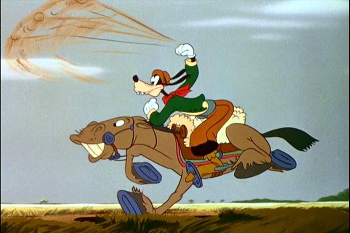

After starting with some massive hits, and then some ambitious failures, Walt Disney Studios got weird with their output. They produced a bunch of "package films," consisting of "Silly Symphony"-style shorts that they could reuse again elsewhere, with some additional dialogue or animation in between to connect them. "Saludos Amigos" and "The Three Caballeros" were the first of these, and are focused entirely on Latin America. From the movies, I assumed the countries were a temporary new interest for Walt (there's a ton of footage of him and the crew touring the countries for fun), but articles say that this was actually comissioned by the US government as a sign of goodwill, in the hopes that it would encourage said countries to stay on the US side of WWII. The two movies are so closely related that they should have been packaged as a pair, but then the pacing might have been too long. "Saludos Amigos" is the stranger of the two, set up to be a documentary of Disney's animators touring Peru, Chile, Argentinia and Brazil. It's only 42 minutes long, more suiting of a television special rather than a theatrical film (but officially has been included in Disney's Animated Classics list, as movie #6). We watch live-action footage with narration of the artists on planes and buses, walking through local towns and festivals, enjoying the food, clothing, culture and hospitality. It's informative, if a little dry, as you might expect of a tour-guide documentary from the 1940's. Between the live-action shots, we see the animators sketching the environments and drawing Disney-esque children with the clothing and equipment the locals use. We get four short films inspired by these adventures. The one about Pedro, the little airplane that could, has the best story, and talks down the least to the audience, just happening to take place in the Chilean mountains. Another short is of Donald Duck making a fool of himself as a tourist in Peru. Another is of Goofy, trading in a US-cowboy costume for that of a gaucho, with new facts about the gaucho lifestyle and clothing presented on screen every few seconds. Finally, there's a short inspired by the popular song "Watercolors of Brazil" (the same song featured in Terry Gilliam's adult feature 'Brazil"), which introduces the fast-talking bird Jose Carioca, taking Donald Duck along for a tour of his home country. Jose is mentioned to be inspired by a local story character in the country, and would be somewhat popular, reappearing again in "Three Caballeros." The shorts are fine enough, and as far as documentaries go, this is a fun way to present one. And I admit I'd have no idea what a "gaucho" was if not for "Saludos Amigos." But it's hard to deny the laziness creeping in here. The shorts look suitable for television, but not really for the theater, and have the tendancy to repeat facts about the countries in a way that feels like you're a child back in school. Surely, there was a more thoughtful way to present the culture, like producing a complete story. But I imagine time was limited to complete the movie. And again, the film is rather short... apparently there were additional documentaries, including a 1942 one at 32 minutes long, with extra footage from the journey, that would have brought up the runtime. But that would have assured this to be a documentary rather than an anthology of shorts. On Disney Plus, there's a warning about outdated cultural depictions. For the life of me, I don't know what the warning was referring to, so maybe they were being pre-emptive on any films that had a significant depiction of any non-American culture. There's also a few scenes of smoking by different cartoon characters. "Saludos Amigos" is an unusal Disney feature, and probably one of the most skippable, especially compared to "The Three Caballeros." But I imagine kids that grew up with this will still have a soft spot fot the nostalgia, and in turn might have a soft spot for the countries that appear in the movie, which was the reason for its production in the first place.
- "Ani" More reviews can be found at : https://2danicritic.github.io/ Previous review: review_Saga_of_Tanya_the_Evil Next review: review_Samurai_Champloo